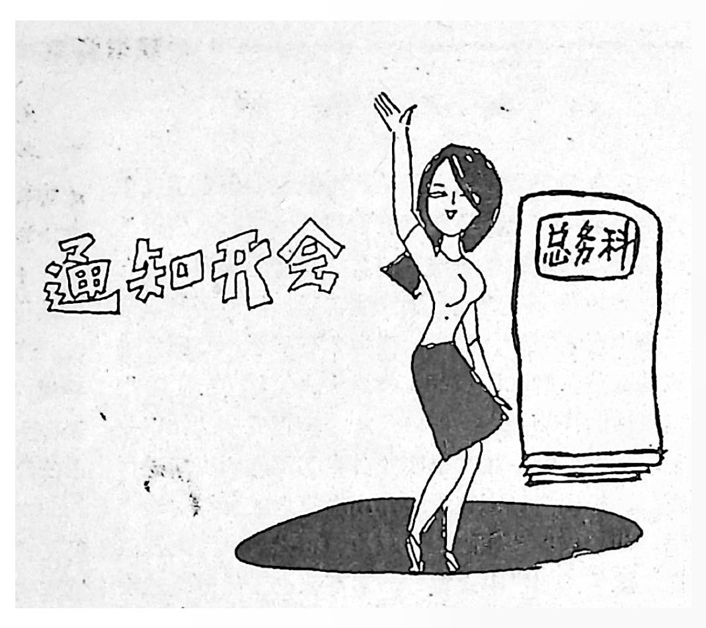

佚名 《人事》1987年第6期（总第21期），第48页（原载《中国青年报》）
通知开会（题图）
Notice of a Meeting (header drawing)
- Text in the drawing
- 通知开会 / 总务科
Notice of a meeting / General Affairs Section - Passage illustrated
走出办公室，董玲迎面碰见了政工科的王科长：“姐夫！大人有令，叫你马上到会议室开会去。”“遵父命。”王科长用戏腔答道。
Leaving the office, Dong Ling ran straight into Section Chief Wang of the political work section: “Brother-in-law! His Excellency commands you to the meeting room at once.” “As my father-in-law commands,” Section Chief Wang replied in an opera singer's voice.From the story 通知开会 (“Notice of a Meeting”) by Liang Shenyi, reprinted from Zhongguo qingnian bao (China Youth Daily), on the same page. 梁深义《通知开会》（原载《中国青年报》），同页
- Description
- Header drawing for the story: a smiling young clerk waves cheerfully beside a door marked “General Affairs Section.”
- Note
- In the story, Dong Ling, sent to call the section heads to a meeting, finds that every one of them is her uncle, brother-in-law, mother, aunt's husband or father — and her father's visitor wants her transferred to the county Party committee.
- Artist
- Unattributed 佚名
- Reprinted from
- 《中国青年报》 — Zhongguo qingnian bao (China Youth Daily)
- Published in
- 《人事》1987年第6期（总第21期）, p. 48
- Themes
- Nepotism · Story illustrations

Cite
Unattributed, “通知开会（题图）” [Notice of a Meeting (header drawing)], Renshi (Personnel) 《人事》, 1987, no. 6, p. 48.